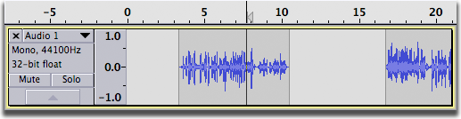
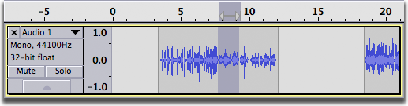
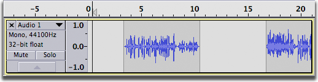
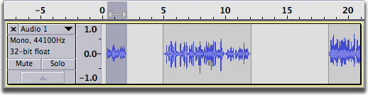
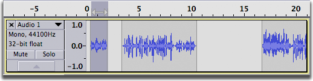
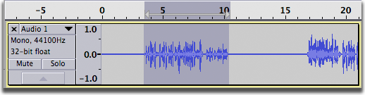
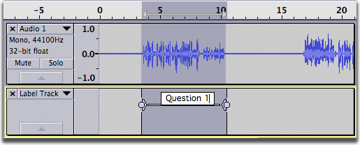
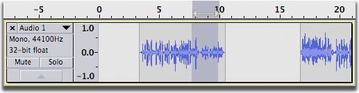
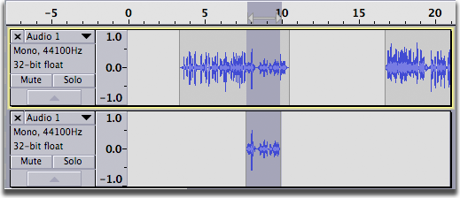

Edit Menu: Copy, Paste and Duplicate
From Audacity Manual
Only one item can be on the clipboard at a time.
Copy CTRL + C
Copies the selected audio data to the Audacity clipboard without removing it from the project.
Cut CTRL + X
Similar to Copy, but removes the selected audio data and and places these on the Audacity clipboard. Any audio data to the right of the selection are shifted to the left.
Paste CTRL + V
Pastes audio which has been cut or copied to the Audacity clipboard, either inserting it into the selected track(s) at the cursor point, or replacing the current selection region(s).
- Pasting inside a clip, with "Editing clips can move other clips" checked:
- 
- 
When you select Paste and the cursor is outside a clip, and there is enough room for the audio that is on the clipboard, the audio on the clipboard can be inserted without any other clips being shifted over if "Editing clips can move other clips" is not checked. If "Editing clips can move other clips" is checked, the following audio will always be moved.
- Pasting outside a clip, with "Editing clips can move other clips" checked:
- 
- 
- Pasting outside a clip, with "Editing clips can move other clips" not checked:
- 
Paste Text to New Label CTRL + ALT + V
Pastes the text on the system clipboard (or text from a label stored in the Audacity clipboard) to a new label at the cursor or region position in the currently selected label track. If there is no selection in the label track a point label is created. If a range is selected in the label track a range label is created. A new label track is created if none exists.
The most recent text cut or copied to either clipboard is pasted. If you have copied or cut a label to the Audacity clipboard, the text of that label will be pasted. If you have cut or copied text to the system clipboard from an application other than Audacity, that text will be pasted.
In the example below, the text "Question 1" was copied from a word processing document then the "Paste Text to New Label" command was executed.
- 
- 
Duplicate CTRL + D
Creates a new track containing only the current selection as a new clip. The new clip is at the same position on the Timeline as the original audio. This is essentially a shortcut method of performing copy, add new track and paste, except that the duplicated audio is not copied to the Audacity clipboard, so cannot be pasted anywhere else.
- 
- 
- You can do interesting things to your duplicates to create special effects. With two versions of the track to work with, you can silence a section, reverb another section, phase a third, filter another (in one track or the other) and see how that sounds.